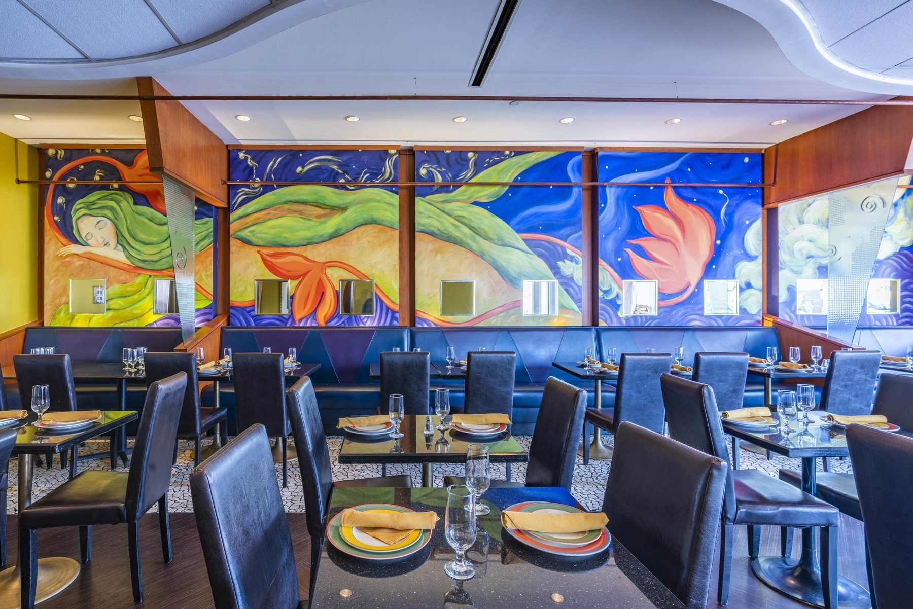

Indian restaurant in Kentlands Market Square · Gaithersburg, MD
“Some of the best Indian food I’ve had this side of the Atlantic.”
Tripadvisor review · November 2024
Open since 2001, Tandoori Nights has cooked North Indian food at 106 Market St in Kentlands: butter chicken rated 4.7 across 2,000+ orders, lamb chops off the clay oven, a weekday lunch buffet, and catering for offices, weddings and parties of any size across the DMV. Every dish is cooked to order with fresh, all-natural ingredients.

Indian catering in Gaithersburg
Indian catering for offices and weddings across the DMV.
Four tray sizes serving 15 to 50 each — order several for larger groups, or a full-service buffet for any headcount. Real prices on the page, rated 5.0 with 100% on-time delivery.

Dine in · Kentlands Market Square
Hours & directions
106 Market St, KentlandsGaithersburg, MD 20878
| Monday – Friday | 11:30am–2:30pm · 4:30–10pm |
|---|---|
| Saturday – Sunday | 11:30am–10pm |
Reservations on OpenTable or at 301-947-4007. Walk-ins welcome. Dining-room buyouts available for private events and large groups.

The dining room. Reviewers call it “cozy,” “quiet” and “clean and bright.” Free public lot out front.
Good to know
Questions we get every day
How much does Indian catering cost in Gaithersburg?
Trays come in four sizes: small serves 15–20, extra-large 45–50, with multiple XL trays or a full-service buffet for larger groups. A small chicken tray is $100, vegetable or dal $75, paneer $85, chicken biryani $100; naan is $2.99 a piece with a 20-piece minimum. A basic lunch for 15–20 (chicken, vegetable, rice, naan) is about $275, roughly $14–18 a head before delivery. Buffets and prix fixe are quoted through our catering form.
Do you deliver in Gaithersburg?
Yes. The best way is to order direct through Toast for pickup or delivery — menu prices, no delivery-app markup. Butter chicken is our most-ordered dish, rated 4.7 across more than 2,000 orders.
Is there a lunch buffet?
Monday to Friday, 11:30am to 2:30pm. $19.99 per person for [X] curries plus tandoori chicken, naan and dessert.
Do you have vegetarian, vegan or gluten-free dishes?
A full section of vegetarian mains, including Palak Paneer, Dal Makhani, Chana Masala and Malai Kofta. The kitchen cooks with less oil and all-natural ingredients. Ask your server about vegan and gluten-free options. [CONFIRM which dishes.]
Where do I park in Kentlands?
Free public lot in Kentlands Market Square, steps from the door at 106 Market St. Reservations on OpenTable or at 301-947-4007; walk-ins welcome. Dining-room buyouts available for private events and large groups.